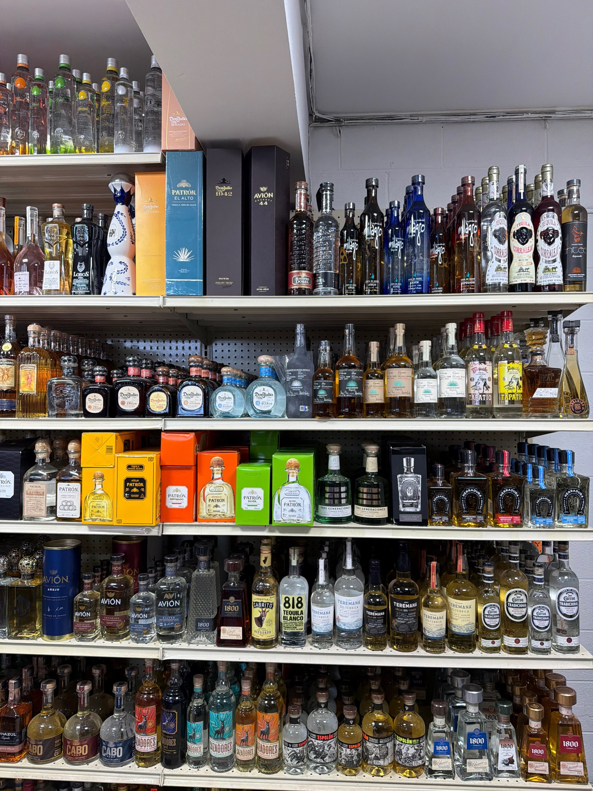
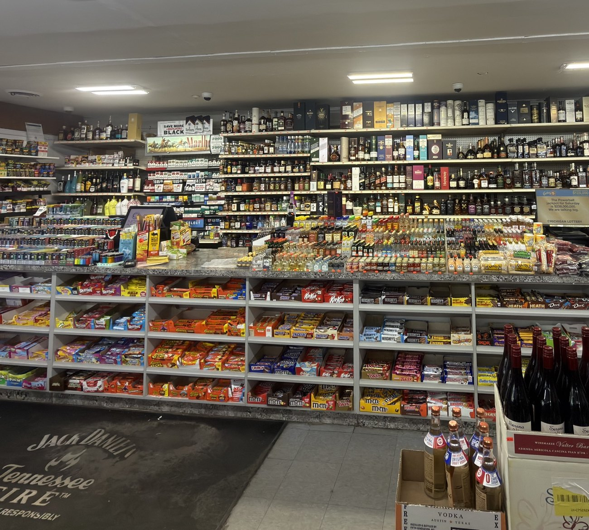
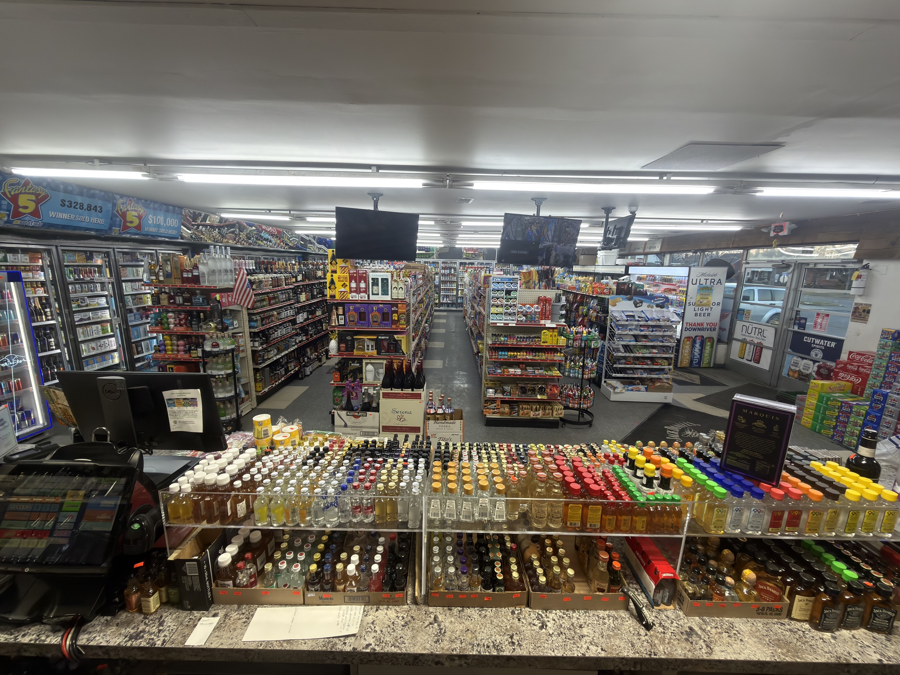
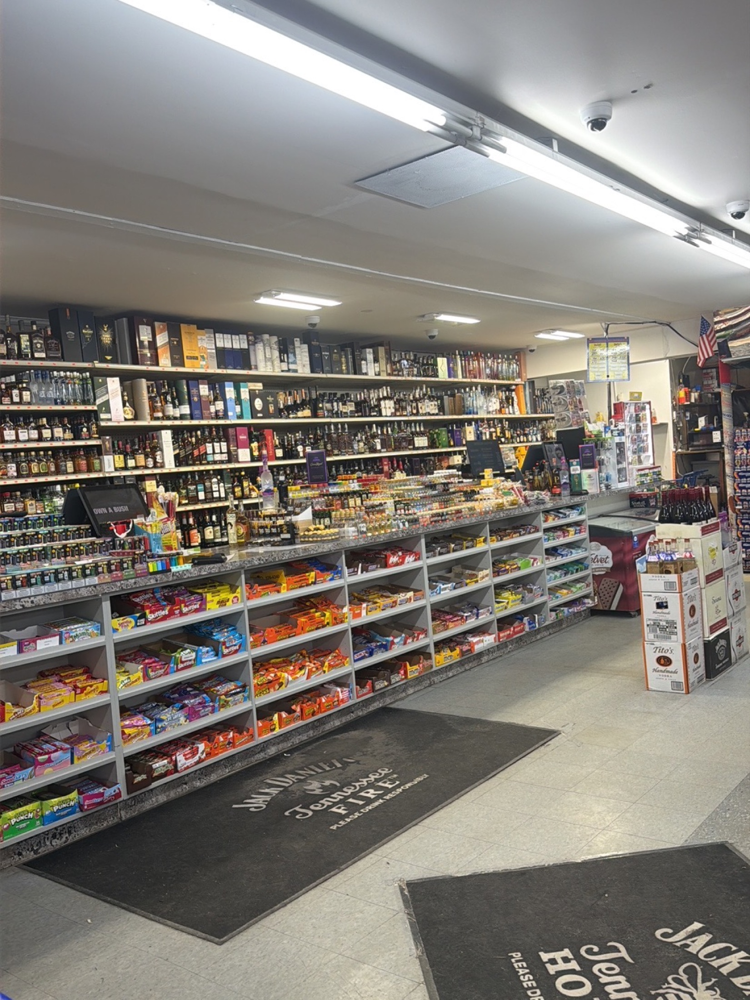
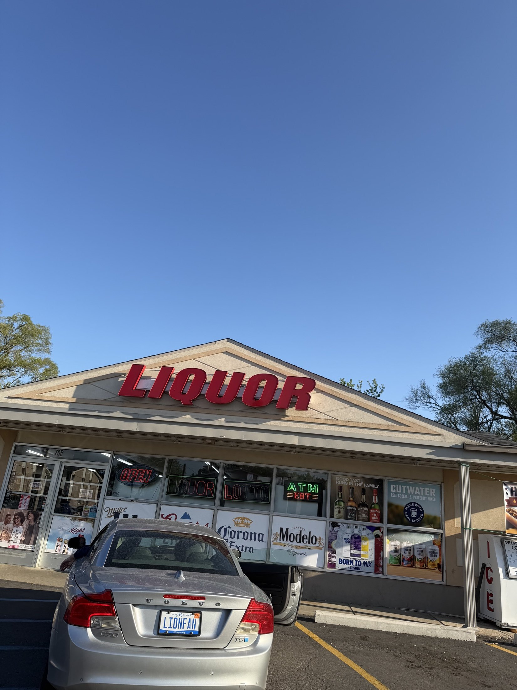

Lincoln Park neighborhood market
Harrison Liquor & Wine Market
A quick, well-stocked stop for liquor, wine, cold beer, mixers, snacks, groceries, lottery, and everyday convenience pickups.
Cold beer coolers
Wide spirits wall
Open daily at 10 AM
Address735 Harrison Blvd, Lincoln Park, MI 48146
Phone(313) 389-3759
HoursSun-Thu 10 AM-10 PM; Fri-Sat 10 AM-11 PM
Local, stocked, convenient
Built for quick stops and weekend runs.
Harrison Liquor & Wine Market keeps the shelves packed for everyday pickups, game-day plans, and last-minute hosting. Browse the spirits wall, check the coolers, pick up mixers, snacks, groceries, or call the store before heading over for a specific bottle.
What you can shop
Liquor, wine, beer, and the little extras.
SpiritsWhiskey, tequila, vodka, rum, gin, brandy, and more.
WineReds, whites, bubbly, sweet wines, and popular favorites.
Cold Beer & KegsDomestic, imported, craft, seltzers, and cooler-door staples.
Mixers, Snacks & GrocerySoda, juice, ice, candy, chips, and quick convenience items.
In one stop
More than bottles on a shelf.
Use Harrison for fast local errands: a cold drink, a mixer, a snack, a lottery ticket, or the missing piece for tonight's plans.
Inside the store
Real shelves, real selection.
Photos from the store show the practical range: packed aisles, cooler doors, spirits shelves, snacks, and checkout essentials.




Visit Harrison
735 Harrison Blvd, Lincoln Park, MI 48146
Need a certain bottle, case, mixer, or party staple? Call the store and check what is available today.
Regular hours
| Sunday-Thursday | 10:00 AM-10:00 PM |
|---|---|
| Friday-Saturday | 10:00 AM-11:00 PM |
Please call to confirm holiday hours or special changes.
Quick trip, stocked shelves
Call ahead or stop by today.
Alcohol sales are for customers 21+ with valid ID. Product selection and hours can change.